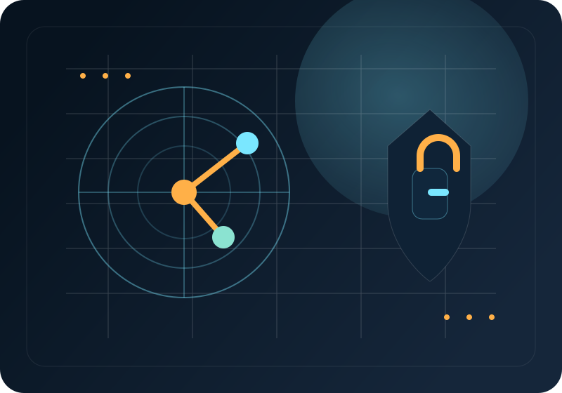

Armoires, puissance, commande, protections, moteurs et consignation.
Saint-Omer / Longuenesse (62), France • BTS Électrotechnique
Othmane BENAMAR
Technicien Électrotechnique, Automatisme & Cybersécurité Industrielle
Technicien spécialisé en électrotechnique, automatisation et instrumentation industrielle, fort d'une double compétence en cybersécurité IT/OT. Je relie le diagnostic électrique, la logique automate, la mesure terrain et la sécurisation des architectures industrielles connectées.
En recherche active d'un stage technique à compter du 19 mai — BTS Électrotechnique.
Siemens S7, TIA Portal, GRAFCET, IHM et essais fonctionnels.
Capteurs, chaînes 4–20 mA / 0–10 V, PID et étalonnage.
Segmentation, DMZ, Python et communication automate.


Positionnement technique
- BTS électrotechnique en cours
- DTS automatisation & instrumentation
- IT/OT cybersécurité industrielle
- 19 mai disponibilité stage
01
Profil professionnel
Une double lecture : le terrain électrique et les systèmes industriels intelligents.
Titulaire d'un DTS en Automatisme et actuellement en BTS Électrotechnique au Lycée Blaise Pascal, je possède une expérience concrète du terrain acquise en environnement industriel : diagnostic électrique, programmation d'automates Siemens sur TIA Portal, maintenance d'armoires et d'équipements de production.
Mon parcours couvre le cycle d'un équipement : énergie et protections, capteurs et actionneurs, logique de commande, interface opérateur, réseau industriel et traçabilité. Cette vision facilite le dialogue entre production, maintenance et informatique industrielle.
Passionné par l'intégration de systèmes intelligents, la convergence IT/OT et la sécurisation d'architectures industrielles, je recherche un stage pour appliquer une méthode rigoureuse : étude des schémas, contrôle des signaux, mise en sécurité, diagnostic, essais et compte-rendu.


02
Expériences en entreprise
Maintenance électrique, automatisme et essais : des missions liées à la disponibilité des installations.
Chaque intervention associe sécurité, méthode de diagnostic et compréhension des contraintes de production.
A2ME — Mohammedia, Maroc
Stagiaire Maintenance Électrique & Électrotechnique
- Diagnostic sur armoires de distribution et coffrets de commande : continuité, isolement, bobines de contacteurs, relais de sécurité et sectionneurs.
- Maintenance préventive et corrective sur lignes de production ; remplacement de MPCB, blocs auxiliaires et électrovannes.
- Calibration et vérification de chaînes de mesure : capteurs inductifs, optiques, PT100 et transmetteurs de pression.
- Consignation / déconsignation, VAT et rédaction de comptes-rendus d'intervention.
SOMATISME — Mohammedia, Maroc
Technicien en Automatisme Industriel
- Programmation et modification de programmes Siemens S7-1200 / S7-1500 en LADDER, SCL et GRAFCET sous TIA Portal.
- Conception, test et optimisation d'IHM WinCC pour le pilotage temps réel et les alarmes de production.
- Maintenance et réglage des vérins, distributeurs et équipements pneumatiques ou hydrauliques.
- Diagnostic des dysfonctionnements et contribution à l'amélioration du taux de disponibilité / TRS.
SOMATISME — Mohammedia, Maroc
Stagiaire Automaticien — PFE
- Conception et simulation d'un système de remplissage automatique de bouteilles sous TIA Portal V16.
- Écriture des séquences GRAFCET et des blocs fonctionnels FC / FB sous PLCSIM.
- Tests fonctionnels virtuels, validation des cycles, gestion des arrêts d'urgence et modes dégradés.
03
Projets techniques
Des réalisations qui font dialoguer vision, réseau, sécurité et automatisme.
Projets documentés autour de la convergence IT/OT, du contrôle d'accès et du durcissement d'infrastructures.

Smart Security : IoT & Vision par Ordinateur — Contrôle d'Accès IT/OT
Python • OpenCV • API Siemens Snap7 • Modbus TCP • IoT • Automate Siemens
- Développement d'un contrôle d'accès intelligent couplant traitement d'image et pilotage industriel.
- Reconnaissance faciale temps réel avec OpenCV sous Python pour identifier les utilisateurs.
- Interfaçage IT/OT Snap7 / Modbus pour transmettre l'ordre de déverrouillage à un automate Siemens.
- Pilotage d'une gâche électrique par sortie relais API et base locale de traçabilité : horodatage et logs.

Infrastructure YTech Solutions : Audit, Hardening & Sécurité Réseau
Debian • Nginx • PHP • PostgreSQL • Nessus • Nmap • Wireshark • Lynis • DMZ
- Déploiement et sécurisation d'une infrastructure hébergeant deux applications web métiers.
- Architecture par VLAN, pare-feu et DMZ afin d'isoler les zones d'exploitation.
- Hardening Nginx : HTTPS, TLS 1.3, en-têtes HTTP de sécurité, contrôle IP et filtrage.
- Pentest et scans Nmap, Nessus et Lynis, suivis de la correction des vulnérabilités détectées.
04
Formations & curriculum
Un cursus au croisement de l'énergie, du contrôle-commande et de la sécurité industrielle.
Septembre 2026 – En cours
Lycée Blaise Pascal — Longuenesse, France
BTS Électrotechnique
- Étude d'installations industrielles et tertiaires : schémas unifilaires / développés, bilans de puissance et chutes de tension.
- Dimensionnement des disjoncteurs, fusibles, relais thermiques et transformateurs de puissance.
- Commande et variation : paramétrage de variateurs de fréquence pour moteurs asynchrones.
- Préparation aux habilitations BR, B2V, BC et H0V ; sécurité du travail sous tension.
Septembre 2025 – Avril 2026
Ynov Campus / Jobintech
Formation Spécialisée en Cybersécurité IT/OT
- Hardening Debian / Ubuntu et Windows Server, gestion des droits et moindre privilège.
- Audits et pentest : surface d'attaque, Nmap, Nessus, Nikto et Lynis.
- Capture de trafic TCP/IP et protocoles industriels avec Wireshark.
- Pare-feux, DMZ et segmentation réseau pour isoler les réseaux d'exploitation OT.
Septembre 2022 – Juin 2024
ISIM — Mohammedia, Maroc
DTS Automatisation & Instrumentation Industrielle
- Conception d'architectures Siemens S7-1200 / S7-1500 et programmation sous TIA Portal.
- Régulation PID pression, débit, température, niveau ; étalonnage 4–20 mA / 0–10 V.
- Développement d'IHM WinCC et introduction aux architectures SCADA.
- Recherche de pannes sur bancs pneumatiques, hydrauliques et armoires de commande.
05
Matrice de compétences
Compétences opérationnelles, outils et technologies mobilisables en environnement industriel.
Électrotechnique & Électricité Industrielle
Schémas EPLAN / See ElectricalCâblage d'armoiresPuissance & commandeProtections & transformateursDimensionnement câblesVariateurs SEW / Siemens / SchneiderMoteurs asynchronesContrôle d'isolementDiagnostic de pannesHabilitations électriques
Automatisme, Régulation & OT
TIA Portal V15 à V18Step7 / PLCSIMWinCC FlexibleLADDER / CONTSCLGRAFCET / S7-GraphSiemens S7-1200 / S7-1500Schneider EcoStruxurePID & instrumentationSCADAModbus TCPProfinetEthernet/IP
Informatique & Cybersécurité IT/OT
Debian / UbuntuWindows ServerWiresharkNmapNessusLynisNginxDMZ & segmentationPython / OpenCV / Snap7SQLHTML / CSSGit / GitHub
Langues
FrançaisCourant / professionnel
AnglaisTechnique — datasheets & documentation
ArabeLangue maternelle
Centres d'intérêt
Prototypage IoT & électronique Maker : Arduino, Raspberry Pi, cartes relais et capteurs. Football.
06
Contact & disponibilité
Disponible à partir du 19 mai pour contribuer à vos projets électriques, automatisés et sécurisés.
Je recherche activement un stage technique en électrotechnique, maintenance, automatisme, supervision ou informatique industrielle.
othmanebenamar10@gmail.com06 05 93 25 75github.com/othmanebenamar10linkedin.com/in/benamarothmaneSaint-Omer / Longuenesse (62), France